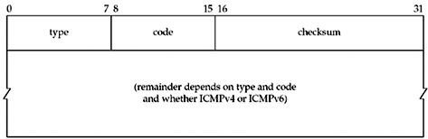
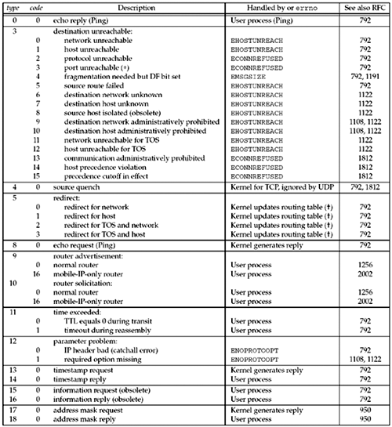
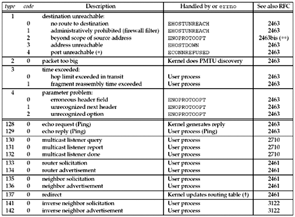

| [ Team LiB ] |
|
A.6 Internet Control Message Protocols (ICMPv4 and ICMPv6)ICMP is a required and integral part of any IPv4 or IPv6 implementation. ICMP is normally used to communicate error or informational messages between IP nodes, both routers and hosts, but it is occasionally used by applications. The ping and traceroute applications (Chapter 28), for example, both use ICMP. The first 32 bits of both ICMPv4 and ICMPv6 messages are the same and are shown in Figure A.14. RFC 792 [Postel 1981b] documents ICMPv4 and RFC 2463 [Conta and Deering 1998] documents ICMPv6. Figure A.14. Format of ICMPv4 and ICMPv6 messages. The 8-bit type is the type of the ICMPv4 or ICMPv6 message and some types have an 8-bit code with additional information. The checksum is the standard Internet checksum, although in ICMPv4, the checksum covers only the ICMP payload starting with the type field, while the ICMPv6 checksum also includes the IPv6 pseudoheader. From a network programming perspective, we need to understand which ICMP messages can be returned to an application, what causes an error, and how an error is returned to the application. Figure A.15 lists all the ICMPv4 messages and how they are handled by FreeBSD. Figure A.16 lists the ICMPv6 messages. The third column indicates the errno value returned by those messages that trigger an error to be returned to the application. When using TCP, the error is noted but is not immediately returned. If TCP later gives up on the connection due to a timeout, any ICMP error indication is then returned. When using UDP, the next send or receive operation receives the error, but only when using a connected socket, as described in Section 8.9. Figure A.15. Handling of the ICMP message types by FreeBSD. *-"port unreachable" is only used by transport protocols that do not have their own mechanism for signalling that no process is listening on a port. For example, TCP sends an RST message so it does not need the "port unreachable" message.
Figure A.16. ICMPv6 messages. **-"RFC2463bis" designates the revision in progress of RFC 2463—[Conta and Deering 2001]. The notation "user process" means that the kernel does not process the message and it is up to a user process with a raw socket to handle the message. No error return is triggered for these messages. We must also note that different implementations may handle certain messages differently. For example, although Unix systems normally handle router solicitations and router advertisements in a user process, other implementations might handle these messages in the kernel. ICMPv6 clears the high-order bit of the type field for the error messages (types 1–4) and sets this bit for the informational messages (types 128–137). |
| [ Team LiB ] |
|
 -redirects are ignored by systems acting as routers by forwarding packets.
-redirects are ignored by systems acting as routers by forwarding packets.